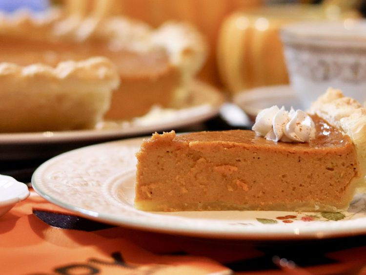

pumpkin pie

Pumpkin pie is an iconic fall dessert—especially for Thanksgiving. But you can and should indulge in this sweet and spicy pie, even if it's just a regular Thursday.
To whet your appetite, we've rounded up our 10 best pumpkin pie recipes of all time, including recipes that use fresh or canned pumpkin, to give you options no matter your skill level or how much time you have.
Ingredients
- 1 (15 ounce) can pumpkin puree
- 1 (14 ounce) can Eagle Brand Sweetened Condensed Milk
- 2 large eggs
- 1 teaspoon ground cinnamon
- 1/2 teaspoon ground ginger
- 1/2 teaspoon ground nutmeg
- 1/2 teaspoon salt
- 1(9 inch) unbaked pie crust
Steps
- Gather all ingredients and preheat the oven to 425 degrees F (220 degrees C)
- Whisk pumpkin puree, condensed milk, eggs, cinnamon, ginger, nutmeg, and salt together in a medium bowl until smooth
- Pour into crust. Bake in the preheated oven for 15 minutes
- Reduce oven temperature to 350 degrees F (175 degrees C) and continue baking until a knife inserted 1 inch from the crust comes out clean, 35 to 40 minutes. Let cool before serving
- Enjoy!